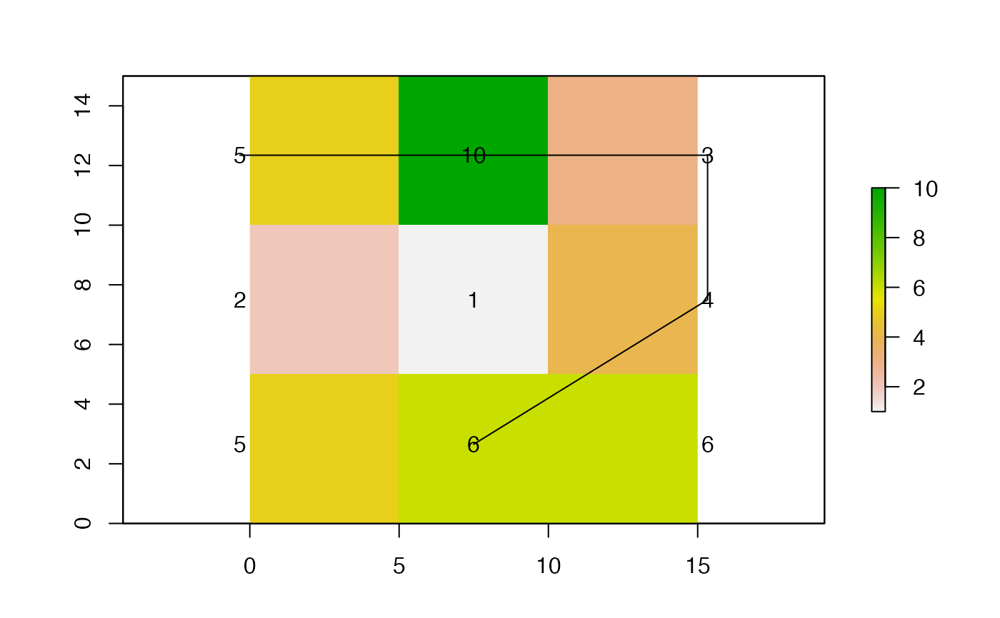

R/dists.R
dist_over_surface.RdThis function calculates the total distance of a path, whose horizontal coordinates are known, over a three-dimensional surface. To implement the function, the path should be supplied as a matrix or dataframe of coordinates or a SpatialLines object and the surface should be supplied as a raster. The function takes the horizontal coordinates of the path and extracts the values of the surface at these points, and then calculates the total distance of the path as the sum of the paired distances between each pair of points.
dist_over_surface(path, surface)
| path | A matrix or dataframe of horizontal coordinates (x, y) or a |
|---|---|
| surface | A |
The function returns a number equal to the total distance along the path.
The total distance of a path over a three-dimensional surface is equal to the sum of the pairwise distances between each point (\(i\)) and its successor (\(i + 1\)) according to the equation: $$\Sigma_{i = 1}^n \sqrt{(x_{i+1} - x_i)^2 + (y_{i + 1} - y_i)^2 + (z_{i + 1} - z_i)^2)}$$ where \(x\), \(y\) and \(z\) are the x, y and z coordinates of each point in three-dimensional space and \(n\) is the total number of points minus 1. Pairwise distances are calculated via dist_btw_points_3d. Note that for realistic distances, some interpolation (e.g., via least-cost paths) between points may be required to generate localisations at sufficiently high resolution to effectively capture the shape of the landscape.
If the coordinates of the points are known in three dimensions already, dist_btw_points_3d can be used directly.
Edward Lavender
#### Simulate a hypothetical landscape # Define a miniature, blank landscape with known dimensions proj_utm <- sp::CRS(SRS_string = "EPSG:32629") r <- raster::raster(nrows = 3, ncols = 3, crs = proj_utm, resolution = c(5, 5), ext = raster::extent(0, 15, 0, 15)) # Define a matrix of hypothetical values for the landscape mat <- matrix(c(5, 10, 3, 2, 1, 4, 5, 6, 6), ncol = 3, nrow = 3, byrow = TRUE) r[] <- mat # Visualise simulated landscape raster::plot(r)#### Example (1): Total distance between two example adjacent points path_cells <- c(1, 2) path_matrix <- sp::coordinates(r)[path_cells, ] dist_over_surface(path_matrix, r)#> [1] 7.071068#> [1] 7.071068#### Example (2): Total distance between two example diagonal points path_cells <- c(1, 5) path_matrix <- sp::coordinates(r)[path_cells, ] dist_over_surface(path_matrix, r)#> [1] 8.124038#> [1] 8.124038#### Example (3): Total distance along a longer path path_cells <- c(1, 2, 3) path_matrix <- sp::coordinates(r)[path_cells, ] dist_over_surface(path_matrix, r)#> [1] 15.67339#> [1] 15.67339#### Example (4): Total distance along an even longer path path_cells <- c(1, 2, 3, 6, 8) path_matrix <- sp::coordinates(r)[path_cells, ] dist_over_surface(path_matrix, r)#> [1] 28.12088#### Example (5): A SpatialLines object can be used for the path path_line <- Orcs::coords2Lines(path_matrix, ID = 1, proj4string = proj_utm) raster::lines(path_line)dist_over_surface(path_line, r)#> [1] 28.12088